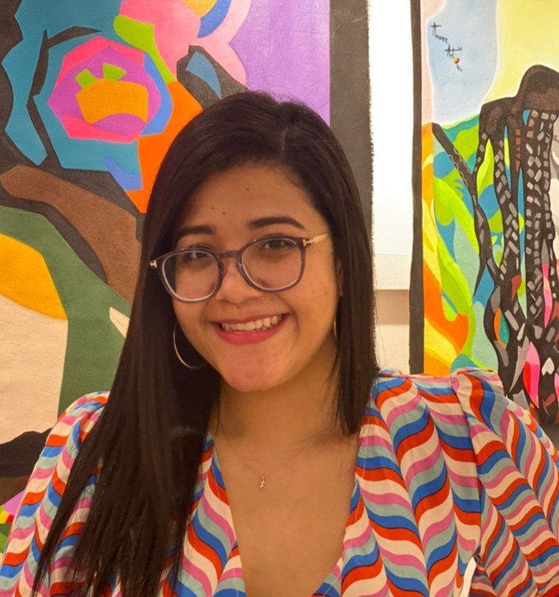

Kenji Contreras
Analista de Datos en CID Gallup
Considero a Luis Rivera, colega y compañero de trabajo en CID Gallup, como uno de los profesionales más versátiles y capaces que he conocido. Como profesional, Luis destaca por su inteligencia y creatividad, cualidades que le permiten encontrar soluciones ingeniosas incluso ante los retos más complejos. Su compromiso con la excelencia es admirable, demostrando constantemente una capacidad técnica sobresaliente en diferentes facetas de análisis y visualización de datos e ingeniería de software.
Más allá de sus habilidades técnicas, también puedo decir con confianza que Luis es una persona muy generosa y amena, haciendo que el ambiente laboral sea muy agradable y positivo para todos sus compañeros. En ocasiones en las que se han presentado dificultades con temas con los cuales no tengo mucha experiencia, siempre se ha mostrado dispuesto a ofrecer su apoyo brindándome consejos prácticos, especialmente en el manejo avanzado de Power Bi. Su capacidad para resolver problemas, colaborar y contribuir, lo hacen un miembro muy valioso de cualquier equipo de trabajo.

Lorena Chanis
Gerente de Comunicación Regional en CID Gallup
Trabajar con Luis rivera ha sido una experiencia enriquecedora. Es un joven con gran inteligencia y notable habilidad investigativa, lo que siempre aporta valor al equipo. Personalmente he aprendido mucho de él, especialmente en el área de tecnología, donde siempre demuestra disposición para compartir sus conocimientos y apoyar a los demás. Sin duda es un compañero que marca la diferencia en el ambiente laboral.
José Barcenas
Coordinador Regional de Validación en CID Gallup
Desde que conocí a Luis Rivera, ha sido una persona clave en mi desarrollo profesional. Luis no solo me enseñó a manejar herramientas como SPSS y programación, sino que también ha sido una fuente constante de apoyo y motivación (Siempre que puede te ayuda incluso cuando está muy ocupado).
Hoy puedo decir con seguridad que ya no lo considero únicamente un compañero de trabajo, sino un verdadero colega y un gran amigo, con quien me enorgullece haber compartido esta etapa de mi vida laboral.